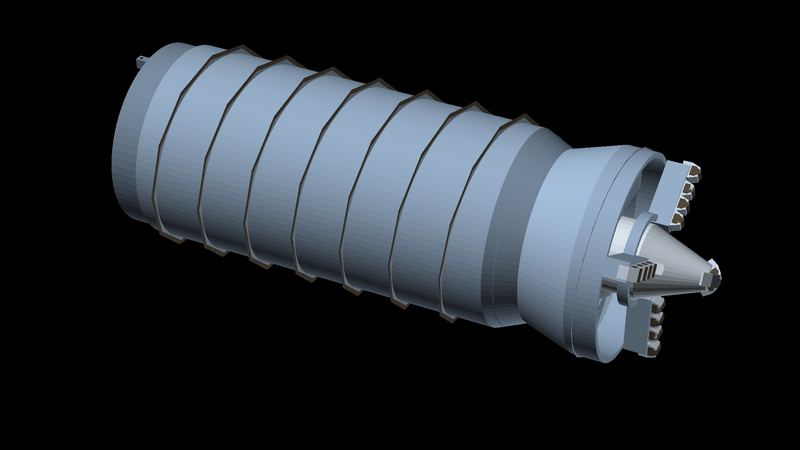

Find the people résumés miss.
Being built for firms that hire engineers and quantitative researchers, and for people who want their work found.
Research prototype · one founder · no clients yet
Method
Three kinds of evidence.
01
Reasoners
Contest and math records from Codeforces, AtCoder and Math Stack Exchange, standardized within each platform. Back-tested on Codeforces only.
Rating already finds strong players. Added to rating, the score lifts AUC from 0.896 to 0.908 (95% CI of the gain: +0.005 to +0.019). A tie-breaker, not a replacement, and part of it is predicting who keeps competing.
Method and numbers
- Cohort. Every Codeforces player rated 1600–2300 on 16 Oct 2024, with at least 15 rated contests and 3 in the year before: 11,088 players. 290 (2.6%) reached 2400 in the two years after.
- Chosen on earlier data. Same rules on 16 Oct 2022: 9,305 players, 274 reached 2400 by Oct 2024, before the test period starts. Traits kept if their within-band AUC was above 0.55, reversed if below 0.45: 12-month rating gain, how few contests it took to reach 2000, months with a contest in the past year, distance below the player's own peak, minus calendar years with a rated contest. Weight on rating, 0.2, also chosen on 2022.
- Test. Frozen and applied to the 2024 cohort: 0.647 within 100-point bands (rating: 0.599), 0.632 within 10-point bands. Overall, rating alone scores 0.896 (95% CI 0.878–0.913) and rating + 0.2 × score 0.908. Paired bootstrap of the gain, 1,000 resamples: +0.005 to +0.019, none at or below zero.
- Who keeps competing. 37% of the 2024 cohort played no rated contest afterwards. Grouping players by contests played afterwards as well as by rating, the score's AUC falls to 0.613.
- Earlier, in-sample runs. Traits chosen and scored on the same players: 0.655 (2024 start), 0.668 (2023 start, three-year window). Our first formula, rating plus 12-month gain, scored 0.879 overall, below rating alone.
- Live list. The scout's Codeforces list is ranked by this tested formula, among players rated 2100 or more with at most 60 followers. The test covered players rated 1600–2300, so the top of the list is beyond what was tested. The AtCoder and Math Stack Exchange lists are not back-tested.
- AUC = the probability that a randomly chosen player who broke through is ranked above one who did not. Within-band AUC is averaged across bands, weighted by the number who broke through; a band needs at least 3 who did and 3 who didn't.
02
Builders
People whose code maintainers merged into major open-source projects, but whom few people follow. Identified by that evidence, not predicted.
From LLVM (67), llama.cpp (33), CPython (21), Rust (8), SciPy (6), NumPy (5), tinygrad (5), Julia (4) and DuckDB (1). JAX was searched too.
Method and numbers
- Rules. 3 or more merged pull requests in the 12 months to 17 Oct 2026, no more than 40 per active month, and 150 GitHub followers or fewer. Removed: bots; anyone who has pressed merge in that project or another one searched; public members of major open-source organizations, including the project's own; people whose profile names a large tech company, the project's sponsor, or an elite university or trading firm; owners of a repository with 1,000 or more stars; and profiles that suggest a minor. Of 268 profiles examined, 118 were removed: 59 for followers, 29 for organization membership, 28 for company or sponsor, 1 as a committer elsewhere, 1 as a possible minor. Half of the 150 have 12 or fewer followers.
- Merge rights. The 142 outside Rust have not pressed merge on any pull request in their project in the history fetched (since Oct 2023; tinygrad since Oct 2025), and none is a public member of the project's organization. A committer who pushes directly and keeps membership private would still slip through. Rust merges through a bot, so for its 8 only organization membership is checked.
- Why we don't call it prediction. In eight of the projects (not Rust or tinygrad), 2,721 people had merged pull requests between Oct 2023 and Oct 2024 and had not pressed merge or approved anyone else's. 156 pressed merge in the two years after, a sign they had been given write access; 135 of them in LLVM. Merged-PR count alone ranks them with AUC 0.641 (LLVM alone: 0.64). Lines per pull request, and months active, tenure and days to merge (in reverse), looked informative in-sample but couldn't be tested out of sample: split by project, one half holds only 3 of the 156. So the list is ranked by merged-PR count, standardized within each project, and it shows the work.
03
Dossiers
For the top 30 so far, code pulls facts from up to 15 of each person's merged pull requests, and an open-weight model running locally reads 12 of them and writes what the person works on. Each dossier links every pull request its summary cites, so a recruiter can check each claim at the source.
Method and numbers
- Facts by code. Files touched, size, number of reviews, praise words in review comments, and the share of changed files that are core code rather than tests, docs or CI (0.00 to 0.93 across the 30), extracted from GitHub, not written by the model.
- Judgment by model. Specialty and summary come from Qwen3 8B running on a laptop. Nothing about a candidate is sent to an outside AI service.
- Check. Every pull-request number the model cites, with or without “#”, is compared with the person's fetched pull requests: none invented in 30 dossiers. It tests citations, not whether a summary is right, so a person reads the pull requests before anyone is contacted.
- Links. Each dossier links exactly the pull requests its summary cites, 2 to 10 per person.
- Not used. The model's own difficulty ratings (all 4 or 5) don't separate people, so they are not shown; the core-code share is shown instead.
Principles
Four rules.
- Public data only, from official APIs and public pages.
- Adults only. Anyone who opts in confirms they are 18 or older.
- Nobody's information goes to a client without their opt-in.
- No scraping of sites that forbid it.
Founder's work
Designed by Neuropian's founder.
Dylan Leitenberg designs machines. The astroworm is a burrowing anchor for asteroid mining; the Water Worm is its version for mine tailings ponds on Earth. Rendered from CAD. Neither has been built.

Next
Not live yet.
- In developmentLinking one person's accounts across platformsConfirmed only by links the person published. Weaker matches (same handle, name or photo) are scored and kept unconfirmed.
- PlannedOpt-in profilesPeople see their own record and choose who else sees it.
- PlannedA pilot with one hiring firm20 opted-in candidates, measured against the firm's usual pipeline.
Contact